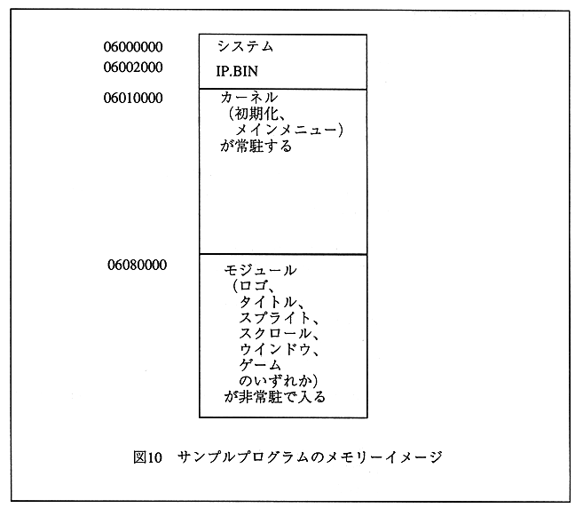

Return to previous page ｜ Return to menu ｜ Go to next page

Figure 10 Sample program memory image
-
Execution procedure with SIMM file
-
- Make up program
WS version make -f smp.mk [ENTER]
PC version smpmk.bat [ENTER]
This will make smp.lod which can be executed on SIMM.
- Load and execute programs
l 04020000;m:smp.lod[ENTER]
Rs [ENTER]
G [ENTER]
The Sega logo at startup is displayed for a moment, and then the sample game is executed.
Return to previous page ｜ Return to menu ｜ Go to next page